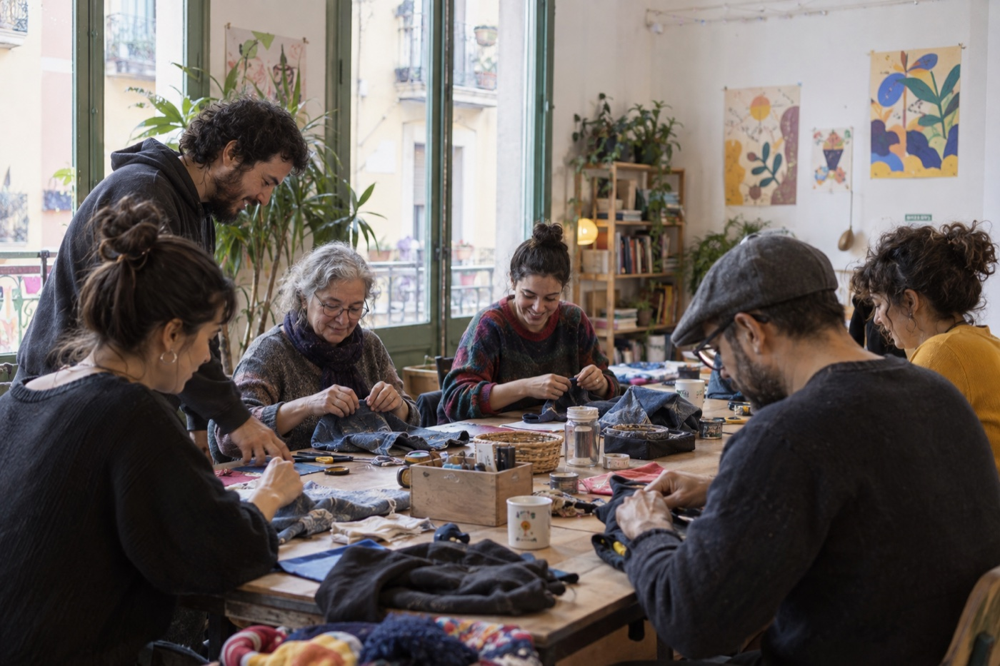

2 hoursTime to make without rushing
Make something that carries the place home.
Marta opens the studio she shares with three other makers. You will begin with local clay, learn how to shape and join it by hand, then finish one small piece with slips prepared in the studio.
No previous experience is needed. Marta keeps the group small enough to help each person properly. Your finished piece is fired after the session and can be collected or posted to you.
What you will do
- 01
Meet over coffee
Get to know the studio, the neighbourhood and what you would like to make.
- 02
Learn the clay
Prepare your material and practise the three hand-building techniques Marta uses most.
- 03
Shape your piece
Make, refine and decorate one object with direct guidance when you need it.
- 04
Leave it for firing
Marta finishes the firing and arranges collection or delivery after the workshop.
Everything you need is included
Coffee, tea and waterClay and studio toolsGlazing and firingLocal collection or paid postage
Meet Marta
Experience host since 2020 · Identity checked
I started working with clay after moving into Gràcia. The studio is where I learned from other makers, and now I enjoy giving visitors enough time to understand the material rather than racing towards a perfect object.
This afternoon also supports Gràcia.
Half of Fairbnb's platform fee goes to a community project selected with local residents.

Gràcia Community Space
Shared activities and practical support shaped with local residents.
Your group contributes€7.20
Where you will meet
A working studio near Plaça de la Virreina in Gràcia. The exact door and arrival notes are shared after booking.
7 minutes from Fontana metro
Plaça de la Virreina